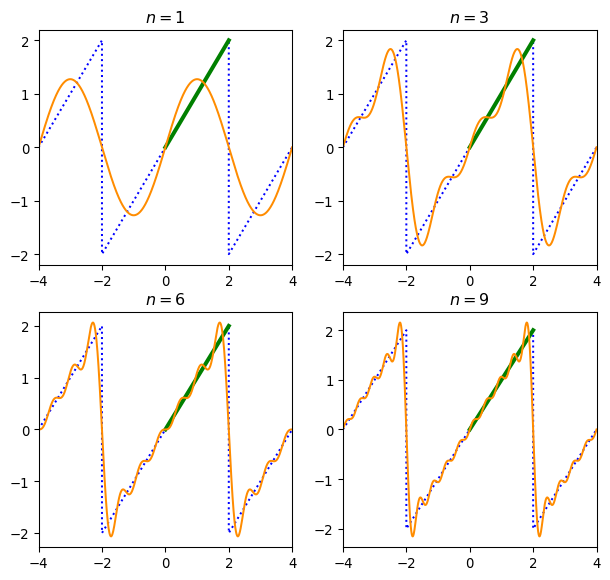
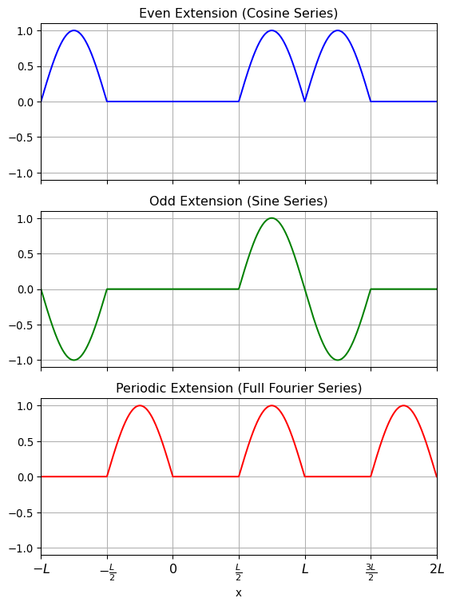
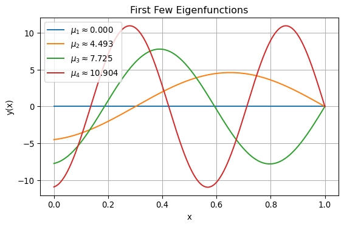

If \(\,\mathbf{u}=u_1\mathbf{i} +u_2\mathbf{j} +u_3\mathbf{k}\,\) and \(\,\mathbf{v}
=v_1\mathbf{i} +v_2\mathbf{j} +v_3\mathbf{k}\,\) are two vectors in \(\mathbb{R}^3\), \(\,\)then inner product is defined:
Suppose \(\left\{ \phi_n(x)\right\}\) is an infinite orthogonal set of functions on \([a,b]\). \(\,\)If \(\,y=f(x)\,\) is a function defined on \([a,b]\),
A set of real-valued functions \(\{\,\phi_0(x),\phi_1(x),\phi_2(x),\cdots\}\,\) is said to be orthogonal with respect to a weight function\(w(x)\) on \([a,b]\,\) if
def rect_wave(x, n): y =0.5for m inrange(1, n +1): y = y +2.0/((2.0*m -1) *np.pi) *np.sin((2.0*m -1)*x)return y example_plot(rect_wave, ns=[1, 3, 6, 9])
Figure 11.1: Fourier Series
\(~\)
The overshooting by the partial sums from the functional values near a point of discontinuity dose not smooth out but remains fairly constant. This behavior of a Fourier series near a point at which \(f\) is discontinuous is known as the Gibbs phenomenon
def lamp_sin(x, n): y =0for m inrange(1, n +1): y = y +4.0/np.pi *(-1)**(m +1)/m *np.sin(m *np.pi /2*x)return y example_plot2(lamp_sin, ns=[1, 3, 6, 9])

Figure 11.2: Sine Series
x_t1 = [-4,-2, 0, 2, 4]y_t1 = [ 0, 2, 0, 2, 0]def lamp_cos(x, m): y =1for m inrange(1, m +1): y = y -8.0/(np.pi *(2*m -1))**2.0*np.cos((2*m -1) *np.pi /2*x)return y example_plot2(lamp_cos, ns=[1, 3, 6, 9])
Figure 11.3: Cosine Series
\(~\)
Half-Range Expansion
Throughout the preceding discussion, \(\,\)it was understood that a function \(\,f\,\) was defined on an interval with the origin as midpoint
However, in many instances, \(\,\)we are interested in representing a function that is defined only for \(\,0 < x < L~\) by a trigonometric series
This can be done in many different ways by supplying an arbitrary definition of the function on the interval \(-L < x < 0\). \(\,\)For brevity we condider three most important cases:
Reflect the graph of the function about the \(y\)-axis onto \(-L < x < 0\)
Reflect the graph of the function through the origin onto \(-L < x < 0\)
Define \(f\) on \(-L < x < 0\;\) by \(\,f(x)=f(x+L)\)
11.4 Complex Fourier Series
Complex Fourier Series
The complex Fourier series of functions \(\,f\) defined on an interval \((-p,p)\,\) is given by
where \(\,\omega=2\pi/T\,\) is called the fundamental angular frequency
Frequency Spectrum
If \(\,f\) is periodic and has fundamental period \(T\), \(\,\)the plot of the points \((n\omega, |c_n|)\)\(\,\)is called the frequency spectrum of \(\;f\)
\(~\)
Example\(\,\) Expand \(\;f(x)=e^{-x}\), \(\;-\pi<x<\pi\;\) in a complex Fourier series and find the frequency spectrum
An orthogonal set of functions can be generated by solving a two-point boundary-value problem involving a linear second-order differential equation containing a parameter \(\lambda\)
The boundary-value problem
\[ y''+\lambda y =0, \;y(0)=0, \;y(L)=0~\]
possessed nontrivial solutions only when the parameter \(\lambda\) took on the values
called eigenvalues. The corresponding nontrivial solutions
\[ y_n=c_n\sin \frac{n\pi x}{L} \]
are called the eigenfunctions
Regular Sturm-Liouville Problem
Let \(p\), \(q\), \(r\), and \(r'\) be real-valued functions continuous on an interval \([a,b]\), \(\,\)and let \(r(x) > 0~\) and \(\,p(x)>0~\) for every \(\,x\,\) in the interval. \(\,\)Then
There are an infinite number of real eigenvalues that can be arranged in increasing order \(\lambda_1<\lambda_2<\lambda_3<\cdots<\lambda_n<\cdots\;\;\) such that \(\lambda_n \to \infty\;\) as \(n\to\infty\)
For each eigenvalue \(\lambda_i\), \(~\)there is only one eigenfunction (except for nonzero constant multiples)
Eigenfunctions corresponding to different eigenvalues are linearly independent
The set of eigenfunctions corresponding to the set of eigenvalues is orthogonal with respect to the weight function \(p(x)\) on the interval \([a,b]\)
from scipy import optimizesqrt_eigenvalues = np.zeros(4)for i inrange(4): sqrt_eigenvalues[i] = np.round(optimize.brentq(lambda x : np.tan(x) +x, (i +0.5001) *np.pi, (i +0.9999) *np.pi), 4)print(f'{sqrt_eigenvalues =}')
Consider \(\,y'' +\lambda y =0~\) subject to the periodic boundary condition \(~y(-L)=y(L)\), \(\,y'(-L)=y'(L)\). \(\,\)Show that the eigenfunctions are
Now \(r(0)=0\), \(\,\)and of two solutions \(J_n(\alpha x)\) and \(Y_n(\alpha x)\), \(\,\) only \(J_n(\alpha x)\) is bounded at \(x=0\)
The eigenvalues \(\lambda_i=\alpha_i^2, \;i=1,2,3,\cdots,\)\(\,\)are defined by means of a boundary condition at \(x=b\):
\[A_2J_n(\alpha b) +B_2\alpha J_n'(\alpha b) = 0 \]
For any choice of \(A_2\) and \(B_2\), \(\,\)not both zero, \(\,\)it is known that the above boundary condition gives an infinite number of roots \(x_i=\alpha_i b\). The eigenvalues are then \(\lambda_i=\alpha_i^2=(x_i/b)^2\)
1.\(~\) Suppose the function \(y=f(x)\), \(0 < x < L\), given in figure is expanded in a cosine series, in a sine series, and in a Fourier series. Sketch the periodic extension to which each series converges
\[f(x) = \begin{cases}
0 & 0 \displaystyle \leq x < \frac{L}{2} \\
\displaystyle -\sin \frac{2\pi x}{L} & \displaystyle \frac{L}{2} \leq x \leq L
\end{cases}\]
Solution
1. Cosine Series (Even Extension)
A cosine series is the Fourier cosine series, which assumes that the function is extended evenly about \(x=0\)
The extended function is even, meaning \(f(-x) = f(x)\)
The domain is extended to \([-L, L]\) and periodically repeated with period \(2L\)
So the full even extension on \([-L, L]\):
\[f_{\text{even}}(x) = \begin{cases}
\sin\left(\frac{2\pi x}{L}\right) & -L \le x < -\frac{L}{2} \\
0 & -\frac{L}{2} \le x < \frac{L}{2} \\
-\sin\left(\frac{2\pi x}{L}\right) & \frac{L}{2} \le x \le L
\end{cases}\]
Then repeat with period \(2L\)
2. Sine Series (Odd Extension)
A sine series extends the function oddly about \(x=0\)
The extended function is odd, so \(f(-x) = -f(x)\)
Defined on \([-L, L]\) and repeated every \(2L\)
So the odd extension is:
\[f_{\text{odd}}(x) = \begin{cases}
\sin\left(\frac{2\pi x}{L}\right) & -L \le x < -\frac{L}{2} \\
0 & -\frac{L}{2} \le x < \frac{L}{2} \\
-\sin\left(\frac{2\pi x}{L}\right) & \frac{L}{2} \le x \le L
\end{cases}\]
Then repeated every \(2L\)
3. Full Fourier Series (Periodic Extension)
The full Fourier series uses both sine and cosine terms
The function is extended periodically with period \(L\)
This shape repeats every \(L\) units
import numpy as npimport matplotlib.pyplot as plt# Define function f(x) on [0, L]L =2* np.pi # for easy visualization, let L = 2πx = np.linspace(-2*L, 2*L, 2000)# Define the base function f(x) on [0, L]def f_base(x): x_mod = x % Lreturn np.where( x_mod < L/2,0,-np.sin(2* np.pi * x_mod / L) )# Even extension (cosine series)def f_even(x):# Reflect across x = 0 and repeat with period 2L x_mod = np.mod(x, 2*L) reflected = np.where(x_mod < L, x_mod, 2*L - x_mod)return f_base(reflected)# Odd extension (sine series) def f_odd(x):# Reflect and invert across x = 0, repeat with period 2L x_mod = np.mod(x, 2*L) reflected = np.where(x_mod < L, x_mod, 2*L - x_mod) sign = np.where(x_mod < L, 1, -1)return sign * f_base(reflected)# Full periodic extension (Fourier series)def f_periodic(x):return f_base(x)# Redefine x-axis from -L to 2Lx_zoom = np.linspace(-L, 2*L, 1000)xticks = [-L, -L/2, 0, L/2, L, 3*L/2, 2*L]xtick_labels = [r"$-L$", r"$-\frac{L}{2}$", r"$0$", r"$\frac{L}{2}$", r"$L$", r"$\frac{3L}{2}$", r"$2L$"]# Plotting with labeled ticksfig, axs = plt.subplots(3, 1, figsize=(6, 8), sharex=True)axs[0].plot(x_zoom, f_even(x_zoom), color='blue')axs[0].set_title('Even Extension (Cosine Series)')axs[0].grid(True)axs[0].set_xlim([-L, 2*L])axs[0].set_ylim([-1.1, 1.1])axs[1].plot(x_zoom, f_odd(x_zoom), color='green')axs[1].set_title('Odd Extension (Sine Series)')axs[1].grid(True)axs[1].set_xlim([-L, 2*L])axs[1].set_ylim([-1.1, 1.1])axs[2].plot(x_zoom, f_periodic(x_zoom), color='red')axs[2].set_title('Periodic Extension (Full Fourier Series)')axs[2].grid(True)axs[2].set_xlim([-L, 2*L])axs[2].set_ylim([-1.1, 1.1])# Set common x-axis ticks and labelsaxs[2].set_xticks(xticks)axs[2].set_xticklabels(xtick_labels, fontsize=12)plt.xlabel('x')plt.tight_layout()plt.show()

\(~\)
2.\(~\) Find the half-range cosine and sine expansions of the given function:
\[ f(x)=x(2-x), \;\;0 < x < 2\]
Solution
1. Half-Range Cosine Series (Even Extension)
We write \(f(x)\) on \(0 < x < 2\) as a cosine series:
\[f(x) \sim \frac{a_0}{2} + \sum_{n=1}^{\infty} a_n \cos\left(\frac{n\pi x}{L}\right)\] where \(L = 2\), and the coefficients are:
But we assumed \(\alpha > 0\), so this is a contradiction. For \(\lambda < 1\), the only solution satisfying the boundary conditions is the trivial solution \(y(x) = 0\) . Therefore, no eigenvalue exists for \(\lambda < 1\)
This implies \(e^{2r_1} = e^{2r_2} \Rightarrow r_1 = r_2\), but they are distinct \(\Rightarrow\) only trivial solution. So, no nontrivial solution for \(\lambda < \frac{1}{4}\)
Case 2:\(~\lambda = \frac{1}{4} \Rightarrow D = 0\)
We consider \(\lambda > 0\), since we typically expect nontrivial eigenfunctions. Let \(\lambda = \mu^2\), \(~\) with \(\mu > 0\). Then the general solution to the differential equation
\[y'' + \mu^2 y = 0\]
is:
\[y(x) = A \cos(\mu x) + B \sin(\mu x)\]
and
\[y'(x) = -A \mu \sin(\mu x) + B \mu \cos(\mu x)\]
Step 2:\(~\) Apply the Boundary Conditions
Condition 1: \(~y(0) + y'(0) = 0\)
\[A + B \mu = 0 \quad \Rightarrow \quad A = -B \mu\]
Condition 2: \(~y(1) = 0\)
\[y(1) = A \cos(\mu) + B \sin(\mu)
= B\left( \sin(\mu) - \mu \cos(\mu) \right)\]
We seek nontrivial solutions \(B \ne 0\), so we must have:
\[\boxed{
\sin(\mu) = \mu \cos(\mu)
}\]
This is the equation that defines the eigenvalues \(\lambda = \mu^2\)
Step 3:\(~\) Eigenfunctions
So the eigenfunctions are (up to constant multiples):
import numpy as npimport matplotlib.pyplot as pltfrom scipy.optimize import fsolve# Define the function whose roots we want to find: # f(mu) = sin(mu) - mu*cos(mu)def f(mu):return np.sin(mu) - mu *np.cos(mu)# Find the first few roots numerically using initial guessesinitial_guesses = [0.5, 4.5, 7.5, 11]mu_roots = [fsolve(f, guess)[0] for guess in initial_guesses]lambda_roots = [mu**2for mu in mu_roots]# Define eigenfunction for given mudef eigenfunction(mu, x):return np.sin(mu *x) - mu *np.cos(mu *x)# Plot the first few eigenfunctions on [0, 1]x_vals = np.linspace(0, 1, 500)plt.figure(figsize=(6, 4))for i, mu inenumerate(mu_roots): y_vals = eigenfunction(mu, x_vals) plt.plot(x_vals, y_vals, label=fr"$\mu_{i +1}\approx {mu:6.3f}$")plt.title("First Few Eigenfunctions")plt.xlabel("x")plt.ylabel("y(x)")plt.legend()plt.grid(True)plt.tight_layout()plt.show()

\(~\)
8.\(~\) Expand \(f(x)=x^4\), \(-1<x<1\) in a Fourier-Legendre series
9.\(~\) Expand the given function in a Fourier-Bessel series using Bessel functions of the same order as in the indicated boundary condition:
\[ f(x)=x^2, \;\;0<x<3, \;\;J_0'(3\alpha)=0\]
Solution
Step 1:\(~\) Understand the eigenfunctions and the orthogonality
This is a Fourier-Bessel series of order \(0\) with a Neumann boundary condition \(J_0’(3\alpha_n) = 0\), so the eigenfunctions are:
\[\phi_n(x) = J_0(\alpha_n x)\]
where \(\alpha_n\) are such that \(J_0’(3\alpha_n) = 0\), or equivalently \(\alpha_n = \frac{\beta_n}{3}\), with \(\beta_n\) being the \(n\)-th positive zero of \(J_0’(z)\)
These \(\phi_n(x)\) are orthogonal with respect to the weight \(x\) on \((0, 3)\):
\[\int_0^3 x J_0(\alpha_m x) J_0(\alpha_n x) dx = 0 \quad \text{for } m \ne n\]
Step 2:\(~\) General Fourier-Bessel expansion formula
The coefficients \(a_n\) are given by:
\[a_n = \frac{\displaystyle\int_0^3 x f(x) J_0(\alpha_n x) dx}{\displaystyle\int_0^3 x J_0^2(\alpha_n x) dx}\]
\(\alpha_n = \frac{\beta_n}{3}\), where \(\beta_n\) is the \(n\)-th zero of \(J_0’\)
Then the expansion is:
\[f(x) = x^2 = \sum_{n=1}^{\infty} a_n J_0\left( \frac{\beta_n}{3} x \right)\]
with
\[a_n = \frac{\displaystyle\int_0^3 x^3 J_0\left( \frac{\beta_n}{3} x \right) dx}{\displaystyle\int_0^3 x J_0^2\left( \frac{\beta_n}{3} x \right) dx}\]
Now, do a substitution to simplify:
Let \(u = \frac{\beta_n}{3} x \Rightarrow x = \frac{3}{\beta_n} u\), and when \(x = 0\), \(u = 0\); when \(x = 3\), \(u = \beta_n\). Then: